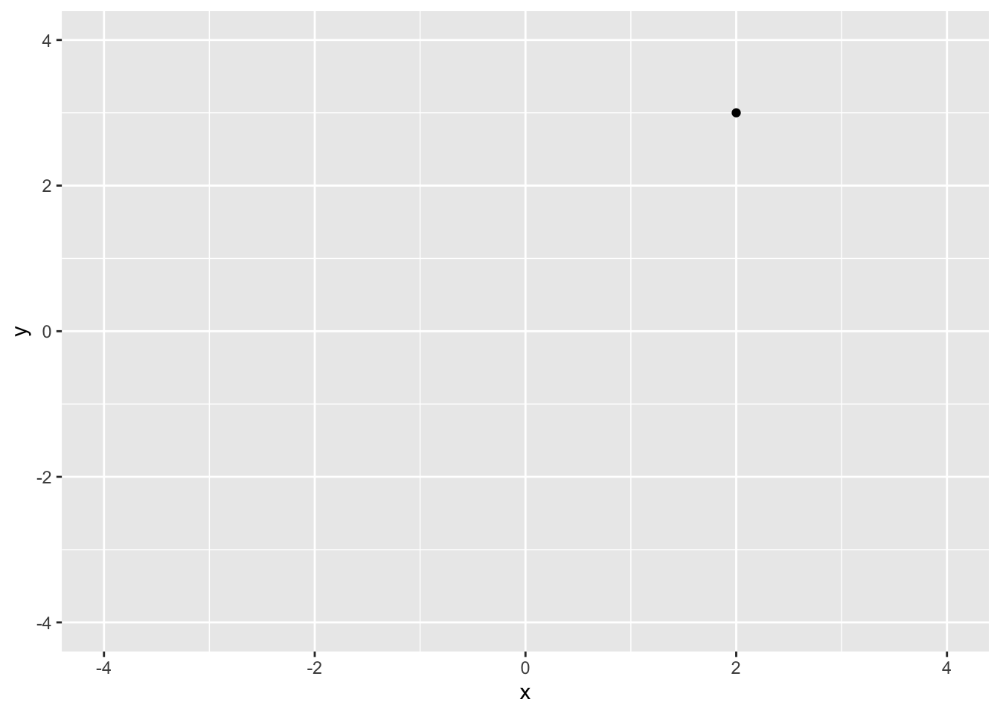
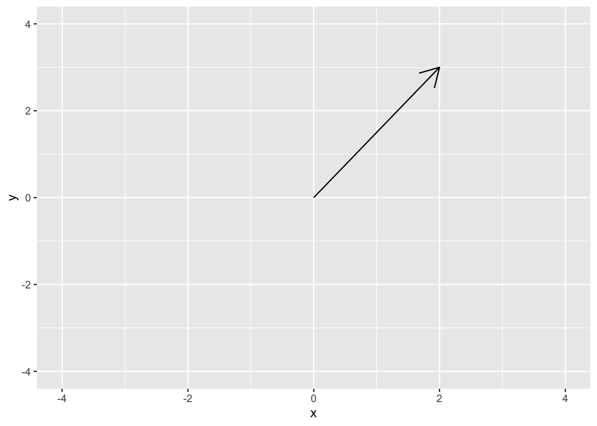
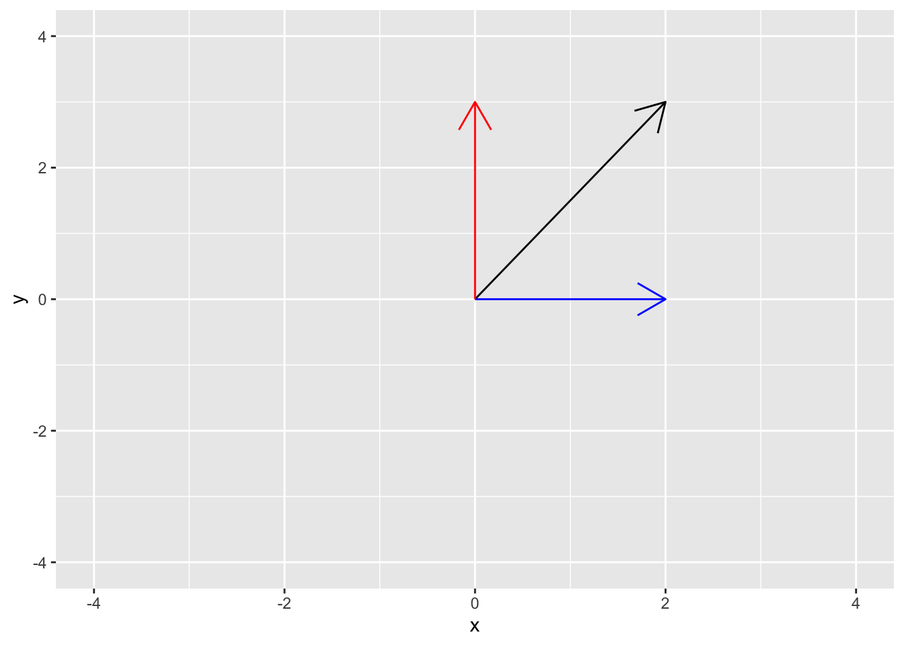

Chapter 3 Vectors spaces
3.1 Linear equations
Let \(x_1, x_2, \ldots, x_n\) be variables with coefficients \(a_1, a_2, \ldots, a_n\), and \(b\) are fixed and known numbers. Then, we say
\[ \begin{align} \label{eq:linear} a_1 x_1 + a_2 x_2 + \cdots + a_n x_n & = b \end{align} \]
is a linear equation. For example, the equation for a line with slope \(m\) and \(y\)-intercept \(b\) is
\[ \begin{align*} y & = m x + b, \end{align*} \]
is a linear equation because it can be re-written as
\[ \begin{align*} y - m x & = b, \end{align*} \]
where \(a_1 = 1\), \(a_2 = m\), \(x_1 = y\) and \(x_2 = x\).
The equations
\[ \begin{align*} \sqrt{19} x_1 & = (4 + \sqrt{2}) x_2 - x_3 - 9 & \mbox{ and } && -4 x_1 + 5 x_2 - 11 & = x_3 \end{align*} \]
are both linear equations because they can be written as
\[ \begin{align*} \sqrt{19} x_1 - (4 + \sqrt{2}) x_2 + x_3 & = - 9 & \mbox{ and } && -4 x_1 + 5 x_2 - x_3 & = 11, \end{align*} \]
respectively. The equations
\[ \begin{align*} x_1 & = x_2^2 + 3 & \mbox{ and } && x_1 + x_2 - x_1 x_2 & = 16 \end{align*} \] are not linear equations because they do not meet the form of (The first equation above has a quadtric power of \(x_2\) and the second equation has a product of \(x_1\) and \(x_2\)).
3.1.1 Systems of linear equations
A set of two or more linear equations that each contain the same set of variables is called a system of linear equations. The equations
\[ \begin{align*} x_1 && + && 4 x_2 && - && x_3 && = & 11 \\ 4 x_1 && + && 5 x_2 && && && = & 9 \end{align*} \]
are a system of equations. Note that in the second equation, the coefficient for \(x_3\) is 0, meaning we could re-write the above example as
\[ \begin{align*} x_1 && + && 4 x_2 && - && x_3 && = & 11 \\ 4 x_1 && + && 5 x_2 && + && 0 x_3 && = & 9. \end{align*} \]
3.2 Vector spaces in \(\mathcal{R}^n\)
Let \(\mathcal{R}^n\) be a real coordinate space of \(n\) dimesions. You are already familiar with the Cartesian plane that consists of ordered pairs \((x, y)\). The Cartesian plane defines the real coordinate space \(\mathbf{R}^2\) of two dimensions. In \(\mathbf{R}^2\), the location of any point of interest can be defined using the \(x\) and \(y\). For example, the plot below shows the location of the point (2, 3)
dat <- data.frame(
x = 2,
y = 3
)
ggplot(data = dat, aes(x = x, y = y)) +
geom_point() +
xlim(c(-4, 4)) +
ylim(c(-4, 4))
A vector space is a generalization of this representation. In \(\mathcal{R}^2\), we say that the vector \(\mathbf{z} = c(2, 3)\) is centered at the origin (0, 0) and has length 2 in the \(x\)-axis and length 3 in the \(y\)-axis. The plot below shows this vector

We can also decompose the vector \(\mathbf{z}\) into its \(x\) and \(y\) components. The \(x\) component of \(\mathbf{z}\) is (2, 0) and the \(y\) component of \(\mathbf{z}\) is (0, 3). The following plot shows the \(x\) component (2, 0) in blue and the \(y\) component (0, 3) in red.

The below Shiny app allows you to plot the vector for any \((x, y)\) pair of your choosing.
The shiny app can be downloaded and run on your own computer using
3.3 Linear Combinations of Vectors
We say that for any two scalars \(a\) and \(b\) and any two vectors \(\mathbf{x}\) and \(\mathbf{y}\) of length \(n\), the sum
\[ \begin{align*} a \mathbf{x} + b \mathbf{y} & = \begin{pmatrix} a x_1 + b y_1 \\ a x_2 + b y_2 \\ \vdots \\ a x_n + b y_n \\ \end{pmatrix} \end{align*} \]
is called a linear combination. The idea of a linear combination can be extended to \(K\) different scalars \(\{ a_1, \ldots, a_K \}\) and \(K\) different vectors \(\{ \mathbf{x}_1, \ldots, \mathbf{x}_K\}\) each of length \(n\) as
\[ \begin{align*} \sum_{k=1}^K a_k \mathbf{x}_k & = \begin{pmatrix} \sum_{k=1}^K a_k x_{k1} \\ \sum_{k=1}^K a_k x_{k2} \\ \vdots \\ \sum_{k=1}^K a_k x_{kn} \\ \end{pmatrix} \end{align*} \]